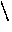

C provides functions which are again similar most languages. One difference is that C regards main() as function. Also unlike some languages, such as Pascal, C does not have procedures -- it uses functions to service both requirements.
Let us remind ourselves of the form of a function:
returntype fn_name(1, parameterdef2,)
{
localvariables
functioncode
}
Let us look at an example to find the average of two integers:
float findaverage(float a, float b)
{ float average;
> average=(a+b)/2;
return(average);
}
We would call the function as follows:
main()
{ float a=5,b=15,result;
result=findaverage(a,b);
printf("average=%fn",result);
}
Note: The return statement passes the result back to the main program.
The void function provide a way of emulating PASCAL type procedures.
If you do not want to return a value you must use the return type void and miss out the return statement:
void squares()
{ int loop;
for (loop=1;loop<10;loop++);
printf("%dn",loop*loop);
}
main()
{ squares();
}
NOTE: We must have () even for no parameters unlike some languages.
Single dimensional arrays can be passed to functions as follows:-
float findaverage(int size,float list[])
{ int i;
float sum=0.0;
for (i=0;i<size;i++)
sum+=list[i];
return(sum/size);
}
Here the declaration float list[] tells C that list is an array of float. Note we do not specify the dimension of the array when it is a parameter of a function.
Multi-dimensional arrays can be passed to
functions as follows:
void printtable(int xsize,int ysize,
float table[][5])
{ int x,y;
for (x=0;x<xsize;x++)
{ for (y=0;y<ysize;y++)
printf("t%f",table[x][y]);
printf("n");
}
}
Here float table[][5] tells C that table is an array of dimension N5 of float. Note we must specify the second (and subsequent) dimension of the array BUT not the first dimension.
Before you use a function C must have knowledge about the type it returns and the parameter types the function expects.
The ANSI standard of C introduced a new (better) way of doing this than previous versions of C. (Note: All new versions of C now adhere to the ANSI standard.)
The importance of prototyping is twofold.
How this is done depends on the scope of the function (See Chapter 34). Basically if a functions has been defined before it is used (called) then you are ok to merely use the function.
If NOT then you must declare the function. The declaration simply states the type the function returns and the type of parameters used by the function.
It is usual (and therefore good) practice to prototype all functions at the start of the program, although this is not strictly necessary.
To declare a function prototype simply state the type the function
returns, the function name and in brackets list the type of parameters in the
order they appear in the function definition.
e.g.
int strlen(char []);
This states that a function called strlen returns an integer value and accepts a single string as a parameter.
NOTE: Functions can be prototyped and variables defined on the same line
of code. This used to be more popular in pre-ANSI C days since functions are
usually prototyped separately at the start of the program. This is still
perfectly legal though:
order they appear in the function definition.
e.g.
int length, strlen(char []);
Here length is a variable, strlen the function as before.
Exercise 12346
Write a function ``replace'' which takes a pointer to a string as a parameter, which replaces all spaces in that string by minus signs, and delivers the number of spaces it replaced.
Thus
char *cat = "The cat sat";
n = replace( cat );
should set
cat to "The-cat-sat"
and
n to 2.
Exercise 12347
Write a program which will read in the source of a C program from its standard input, and print out all the starred items in the following statistics for the program (all as integers). (Note the comment on tab characters at the end of this specification.)
Print out the following values:
Lines:
* The total number of lines
* The total number of blank lines
(Any lines consisting entirely of white space should be
considered as blank lines.)
The percentage of blank lines (100 * blank_lines / lines)
Characters:
* The total number of characters after tab expansion
* The total number of spaces after tab expansion
* The total number of leading spaces after tab expansion
(These are the spaces at the start of a line, before any visible
character; ignore them if there are no visible characters.)
The average number of
characters per line
characters per line ignoring leading spaces
leading spaces per line
spaces per line ignoring leading spaces
Comments:
* The total number of comments in the program
* The total number of characters in the comments in the program
excluding the "/*" and "*/" thenselves
The percentage of number of comments to total lines
The percentage of characters in comments to characters
Identifiers:
We are concerned with all the occurrences of "identifiers" in the
program where each part of the text starting with a letter,
and continuing with letter, digits and underscores is considered
to be an identifier, provided that it is not
in a comment,
or in a string,
or within primes.
Note that
"abc\"def"
the internal escaped quote does not close the string.
Also, the representation of the escape character is
'\\'
and of prime is
'\''
Do not attempt to exclude the fixed words of the language,
treat them as identifiers. Print
* The total number of identifier occurrences.
* The total number of characters in them.
The average identifier length.
Indenting:
* The total number of times either of the following occurs:
a line containing a "}" is more indented than the preceding line
a line is preceded by a line containing a "{" and is less
indented than it.
The "{" and "}" must be ignored if in a comment or string or
primes, or if the other line involved is entirely comment.
A single count of the sum of both types of error is required.
NOTE:
All tab characters ('') on input should be interpreted as multiple
spaces using the rule:
"move to the next modulo 8 column"
where the first column is numbered column 0.
col before tab | col after tab
---------------+--------------
0 | 8
1 | 8
7 | 8
8 | 16
9 | 16
15 | 16
16 | 24
To read input a character at a time the skeleton has code incorporated to read a
line at a time for you using
char ch;
ch = getchar();
Which will deliver each character exactly as read.
The "getline" function then puts the line just read in the global
array of characters "linec", null terminated, and delivers
the length of the line, or a negative value if end of data
has been encountered.
You can then look at the characters just read with (for example)
switch( linec[0] ) {
case ' ': /* space ..... */
break;
case '\t': /* tab character .... */
break;
case '\n': /* newline ... */
break;
....
} /* end switch */
End of data is indicated by scanf NOT delivering the value 1.
Your output should be in the following style:
Total lines 126
Total blank lines 3
Total characters 3897
Total spaces 1844
Total leading spaces 1180
Total comments 7
Total chars in comments 234
Total number of identifiers 132
Total length of identifiers 606
Total indenting errors 2
You may gather that the above program (together with the unstarred
items) forms the basis of part of your marking system!
Do the easy bits first, and leave it at that if some aspects worry you.
Come back to me if you think my solution (or the specification) is wrong!
That is quite possible!
Exercise 12348
It's rates of pay again!
Loop performing the following operation in your program:
Read two integers, representing a rate of pay (pence per hour) and a
number of hours.
Print out the total pay, with hours up to 40 being paid at basic rate,
from 40 to 60 at rate-and-a-half, above 60 at double-rate.
Print the pay as pounds to two decimal places.
Terminate the loop when a zero rate is encountered. At the end of the loop, print out the total pay.
The code for computing the pay from the rate and hours is to be written as a function.
The recommended output format is something like:
Pay at 200 pence/hr for 38 hours is 76.00 pounds
Pay at 220 pence/hr for 48 hours is 114.40 pounds
Pay at 240 pence/hr for 68 hours is 206.40 pounds
Pay at 260 pence/hr for 48 hours is 135.20 pounds
Pay at 280 pence/hr for 68 hours is 240.80 pounds
Pay at 300 pence/hr for 48 hours is 156.00 pounds
Total pay is 928.80 pounds
The ``program features'' checks that explicit values such as 40 and 60
appear only once, as a #define or initialised variable value.
This represents good programming practice.